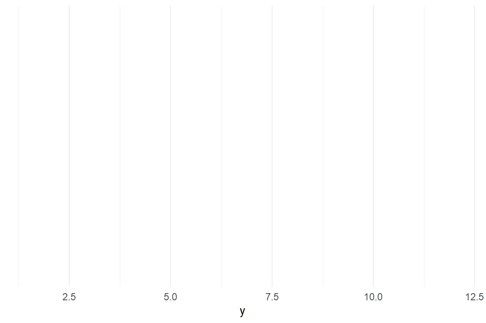
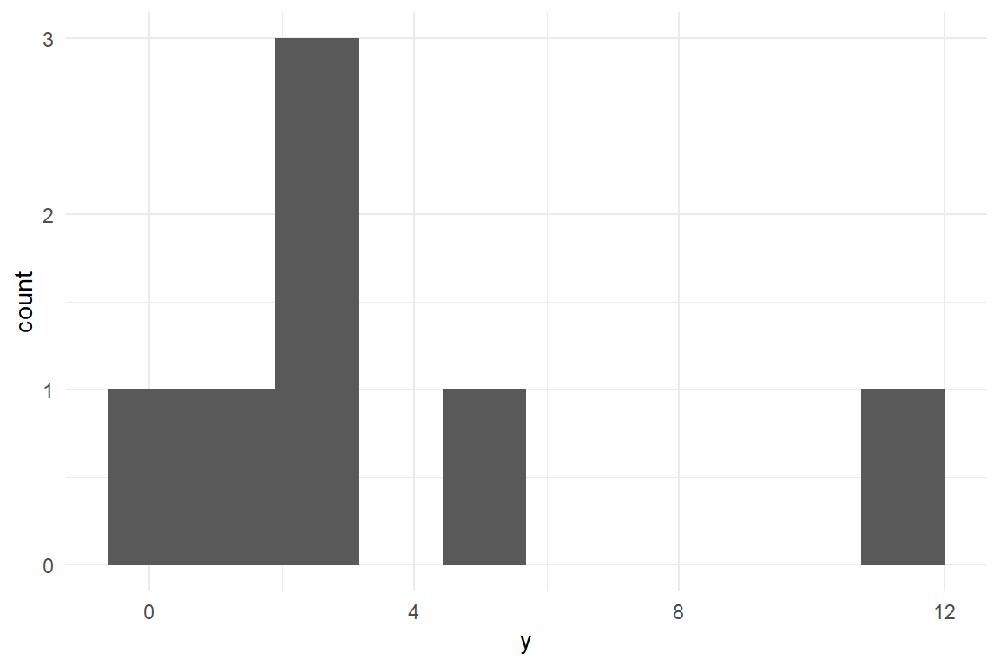

New statistics for the design researcher
A Bayesian course in tidy R
2020-09-24
1 Introduction
1.1 Whom this book is for
1.1.1 The empirical design researcher
If you are not a designer, chances are good that you are a design researcher very well. Are you doing studies with people and is your work about ways to achieve or improve products, services, trainings or business? Welcome to the not-so-special club of people I call design researchers.
Of course, I have no idea who you are, personally, but I figure you as one of the following personas:
You are an industrial design researcher, thirty-three years old, leading a small team in the center for research of a car maker. Your task is to evaluate emerging technologies, like augmented reality, car-to-car communication and smart light. Downstream research relies on your competent assessment of what is feasible. For example, you have just been asked to evaluate the following: Blue light makes people wake up easier, could it also be used to let car drivers not fall asleep? Several engineers and one industrial engineering student are involved in putting a light color stimulator for a premium car of the brand and stuff two workstations in its back, hooked to the recording systems and driving performance and physiological measures. Yes, this is as expensive as it sounds, and this why you have skin in the game, when you do a study.
You are a young academic and just got a cum laude master’s degree in computer science. For your thesis you developed and implemented an animated avatar for a digital assistant. A professor from the social psychology department has read your thesis. He just got a funding for research on mass emergency communication using projected virtual characters. He fears that a young psychologist would not be up to the technical part of the project and found you. But, you ask yourself, am I up to the task of running experimental studies and do the statistics?
1.1.2 The experimentalist
If you are doing research with people, but the answers you seek are far from being applicable to anything in sight, don’t put this book away. Chances are good that you will be able to read through the ephemeral details of the cases I present and recognize your own research situations, for example that you are comparing two groups. As you can see in the table of contents, you don’t even have to read more than half the book to get there.
It may be true that strictly experimental data does not require more than group comparison. Still, I please you: also read the chapter on multilevel models. So much contemporary experimental research mistakens average for universal. It makes a difference to ask:
“Are responses in the Stroop task responses delayed in the incongruent condition?”
or to ask:
“Every person responds delayed in the incongruent condition?”
If your work is about revealing universal laws of behaviour, you have to search for the answer on an individual level. Technically, that means a rather simple multi-level model and a spaghetti plot will do the rest. But note that such a model is composed of many little participant-level models and all of them need their data. For multi-level models you need a within-subject design and repeated measures. On the second thought that makes full sense, as what really ask is:
“Do all people shift into a slower mode in the incongruent condition?”
This is not about groups of people, but mode transitions in individual brains. These transitions can only be observed by putting one-and-the-same person into all the conditions. If you fear that the order of modes makes a difference, why not put order under statistical control? Record what you cannot control and check the interaction effects. Maybe it is not so bad.
Just another candy for you: Response times! Have you been struggling with them forever, because they are not Normal distributed? Have you resorted to non-parametric tests so many times that what you say became “response times are non-parametric”? You shouldn’t say that. Furthermore, your non-parametric sacrifices can be history with Generalized Linear Models.
Then again, you may soon notice a disturbing lack of stars. Is this book like a very dark night? Consider the opposite possibility: most times when you don’t see the stars is at daylight. But let me hand you a torch with a chapter on model selection. The following paragraph may help you pushing your work through the review process:
In order to confirm that the Stroop effect exists, we compared the predictive power of two models by information crieria. M_0 is an intercept-only model that denies the Stroop effect, M_1 allows for it. In order to evaluate universality of the Stroop effect, the models got participant-level random effects. As response times tend to have an offset and are left-skewed we chose exponential-Gaussian error distributions.
1.1.3 The applied researcher
Tongue-in-cheek, applied researchers take real problems to get their questions, but rarely solve them. Why not? It is legitimate, almost natural, to ask what causes the Uncanny Valley effect, for instance. You do a series of experimental study and also throw personality scales into the game. Maybe, the effect is not unversal. Why? Just that.
1.2 What is New Statistics?
This book makes the following assumptions:
- Design research is for decision making, where one accounts for expected utility of design options. This requires
- quantitative statements
- statements of (un)certainty
- Bayesian statistics is intuitive. Everybody has a good intuition about probability, value, decision making and gambling. It requires little effort to get to a more formal level of understanding.
- Data arrives through data generating processes. Premise of statistical modelling is to neatly align to the generating process’ anatomy.
- Applied research data is multivariate and correlated. There is nothing such as a nuisance variable. Everything that helps understanding advantages and drawbacks of a design matters.
- Average? Neverage! People differ, and diversity matters in design.
- The universe is endless, but everything in it is finite, which strictly is at odds with linearity assumptions.
- The human eye is a highly capable pattern evaluator. It would be a waste to not use visuals for exploring data and communicating results.
- The best way to anticipate and plan data analysis is to simulate data upfront.
- R is the statisticians preferred toolbox. 80% of statistical analysis can be done with 20% of R’s full capabilities.
New Statistics can also be described as a style of reporting. A classic analysis report has the following structure:
- Recollecting the hypothesis: Participants in the control condition are faster.
- Descriptive statistics: *The difference of means in the sample is \(21.7\).
- Stating the null hypothesis: \(H_0: (M_\textrm{exp} - M_\textrm{control}) = 0\)
- Testing the assumptions of ANOVA:
- homogeneity of variance:
- Normal distribution of residuals
- Reporting p-values: The chance that a difference of \(21.7\) appears, although the null hypothesis is true, is \(p \leq .05\)
A New Statistics report looks like this:
- Recollecting a quantitative research question: Participants in the experimental condition are 10% faster.
- Explorative figures: *The boxplot shows that participants in the experimental condition are faster by around 20 seconds.
- Model description: We use a model on response time with two linearized predictors, Condition and age (for control), with Gamma distributed responses
- Reporting CLU estimates: Most likelyx
1.3 How to use this book
Chapter 1.4 introduces a framework for quantitative design research. It carves out the basic elements of empirical design research, such as users, designs and performance and links them to typical research problems. Then the idea of design as decision making under uncertainty is developed at the example of two case studies.
Chapter 3 introduces the basic idea of Bayesian statistics, which boils down to three remarkably intuitive conjectures:
- uncertainty is the rule
- you gain more certainty by observations
- your present knowledge about the world is composed of what you learned from data and what you knew before.
The chapter goes on with introducing basic terms of statistical thinking. Finally, an overview on common statistical distributions serve as a vehicle to make the reader familiar with data generazing processes. I am confident that this chapter serves newbies and classically trained researchers with all tools they need to understand Bayesian statistics. The more formally trained reader may want to take this as a bedtime reading.
Chapter 2 is a minimal introduction to this marvelous programming language. Readers with some programming experience can work through this in just one day and they will get everything they need to get started with the book. Readers with prior R experience may get a lot out of this chapter, too, as it introduces the tidy paradigm of R programming. Tidy R is best be thought of as a set standard libraries 2.0. New tidy packages are arriving at an accelerating pace in the R world, and coding tidy is usually much briefer, easier to read and less error prone. It has at least the same significance as turning from procedural programming to object orientation. While this chapter serves as a stepping stone, the reader will encounter countless code examples throughout the book, working through these examples is a
The second part of the book consists of three chapters that strictly built on each other. The first chapter 4 introduces basic elements of linear models, which are factors, covariates and interaction effects. A number of additional sections cover under-the-hood concepts, such as dummy variables or contrasts, as well as basic model criticism (residual analysis). Working through this chapter fully is essential as develops the jargon to a good deal.
However, for most readers, the first chapter is not sufficient to get to work, as it does not cover models for repeated measures. This is added extensively in chapter 5. It proceeds from simple repeated measures designs to complex designs, where human and multiple non-human populations encounter each other. After working through this chapter, the reader is prepared to design highly effective studies. As long as the patterns of randomness are not off by to much from the linear model assumptions, it also suffices to get to work, seriously.
The third chapter 6 opens up a plethora of possibilities to analyze all kinds of performance variables. Standard models are introduces to deal with counts, chances, temporal variables and rating scales. It is also meant as an eye opener for reseachers who routinely resorted to non-parametric procedures. After working through this chapter, I would consider anyone a sincere data analyst.
1.3.1 In the classroom
Content-wise, this book covers about 200% of a typical Social Sciences Statistics curriculum. At least at my university, students learn roughly learn about the first 50% of chapters 3, 4, 5, 6 and 7, before they graduate. However, never have I been in the situation myself, to teach a whole statistics curriculum to a cohort of students. The idea for this book emerged from statistics workshops, which I have given outside and inside universities, for professionals, colleagues and a group of master students.
If you are a docent in the Social Sciences, this book certainly can back an entry-level Statistics course. However, you should be aware that the approach in this book is not yet common ground. While you yourself may find the approach of Bayesian parameter estimation compellingly intuitive, your colleagues may not like the idea, that future generations may no longer be able to read their publications, when they rest on classic null hypothesis testing. Another consideration is that this book is only useful for students with the capacity to learn just a little bit of programming. Do not under-estimate your students on this. I have seen it happen at my home university, that cohorts of Psychology students first started learning SPSS syntax, and now learn R. Still, that puts you into the situation of teaching Programming. To summarize, what I said in 1.3.3, programming you better don’t teach in a series of lectures, but by pushing your students’ noses into the code. Chapter 2 has served me well to get Psychology students over the first hurdles. If you have come so far as to give R programming workshops, consider staying with this form of taching. I’ll come back to it.
My experience tells that there is an increasing demand to teach empirical research methods to engineering students. If that is your situation, this book is particularly well-suited to make a course. Not only is programming in R much less of a concern (or is even a surplus), but also is this book free of outdated customs, that actually have never been appropriate for an engineering context. Engineers, as I know them, are interested in quantification of design effects, rather than falsifying theories. In addition, the case studies in this book convey knowledge about effective research designs and validity of measures, as does the following section (1.4).
In both of the above cases, if I were asked to develop a full course on the matter, I would make it a series of workshops, roughly five one-day (or ten half-a-day). The most effective method for a workshop is to have students get acquainted with the matter by studying selected parts of the book, in advance, and let them work on one assignment during the workshop. I have made good experience with tutored pair-programming, where two students work together, while the teacher stays in the background, most of the time. During each workshop, students are given a data set with a brief story to it and an assignment, like the following example:
Some novel augmented-reality (AR) side-view mirrors have been designed and the benefits for driving performance needs to be assessed. An experiment has been conducted, where the AR mirros were compared to the classic side-view mirrors. Participants have been classified in low and high driving experience and age was recorded. Every participant completed a set of eight tasks under the following conditions:
- AR mirrors versus classic mirrors
- day ride versus night ride
The following measures were taken:
- time-on-task (seconds)
- steering reversal rate (counts, lower is better)
- cognitive workload (rating scale, 0 to 1)
Assignment:
- Conceive one or more research questions, e.g.:
- The AR design creates less workload.
- The AR design improves performance especially at night
- Read and clean the data set
- Produce summary tables and graphs that reflect the research question
- Build a model and interpret the parameter estimates.
If you use this book for workshops, that means you will have to come up with some data sets. Unless you can pull a few out of the drawer, it may be tricky to put your hands on some real data sets. A way out is to simulate data. In this book I haven’t gone to the lengths of systematically introducing data simulation, but I do use several simulated data sets and the code for simulation can be found in A.2.
If the audience is somewhat experienced, meaning that they at least have some practice in programming R, and you want to bring as much as possible across in little time, the method of choice is live programming mode. This is best pictured as think-aloud live demonstration - you talk while you are writing R code. Of course, this is only feasible, if you have such outstanding programming skills, that you can write valid code, while you talk and think. An important element of live programming is that students type the code as they see it on the presentation screen. Encourage your students to work with you, to keeps them in the action-feedback loop, from head to the finger tips 1.3.3.
Examination is the other part of teaching. Without further a-do, here is what I do: During my workshops, students get to work on a case study and for examination they get to do a data analysis on a similar case. That does not mean, you cannot examine by using a written exam. It certainly is un-wise, to let students write code on paper, but still you can easily produce exam questions that test on understanding concepts, such as:
- Interpret the following coefficient table
- What is the difference between saturation and amplification effects?
- In which situation is it better to use an ordinal factor model, rather than a linear regression?
- Customer waiting times have been measured in several customer service hotlines. What would be an appropriate distribution family?
1.3.2 Routes
If you use this book for studying, two considerations play a role for finding the optimal route through this book. what is your background in Statistics? For using this book, effectively, you need a little bit of understanding of probabilities and basic statistics, most of which is high-school math. As such, it may be a while ago and a refresher is on order. Chapter A.2.3 is a quick-read, if you are confident. If you lack any background in statistics, 3 should be studied, first. If your background is Social Sciences, then you probably know quite something about probabilities and Statistics, but, you wonder more what the “Bayesian” is all about and how compatible it is to you. Section 3.3.4 discusses the issue and after all, it is question of belief.
The precondition for using this book effectively, is the skill of coding in R. If you have basic skills in another programming language, studying chapter 2 should do the trick. If you are experienced in programming, but not yet in R, feel confident to skip that chapter and return to it, only when you have a strange encounter. Chapters 2.2.8 to 2.2.12 explain programming techniques, where R differs the most from general purpose languages. If this is the first time, you learn a programming language, your mileage may vary. Chapter 2 can at least provide you with an overview of all that you have to know, but some other books provide a more gentle and detailed introduction to R. In any case, learning your first programming language by a book alone may turn out difficult.
The next consideration is whether you want to go horizontal or vertical. All of chapters 4 through 6 first add a few essential techniques in the first three sections, before going “horizontal” in the remaining sections, which explore and further expand these techniques.
My preferred way for workshops based on this book is vertical, by touching once on all three of these chapters, such as the following route, using the IPump case study A.1.3.
- Section ?? introduces the regression engine and basic reporting techniques, such as coefficient tables
- Section 4.3.1 introduces the principles of factorial models, just enough to analyse data from an experimental design comparison.
- Section ?? introduces just enough multi-level thinking to make the factorial model multi-level.
- Section 6.1 explains the three limitations of linear models, and introduces link functions and choice of random distribution.
- Section 3.4.2.4 introduces Poisson distribution as one common shape of randomness, that many people have not yet heard of.
- Section ?? puts Poisson distribution and link function to practical use on the response variable deviations
Experimenters in Cognitive Psychology, if they read this, often use reaction time data to test their hypotheses. The suggested vertical route matches the above up to 6.1. Then, section 6.3 introduces Exponential-Gaussian distribution as plug-in-and-use alternative to the “Normal” error term. Section 7.2, and 7.2.5in particular, show how hypothesis testing (and more) can be done in a Bayesian framework.
User Experience researchers (and Social Psychologists) make abundant use of rating scales. The vertical route in such a case is
- Section ??, 4.3.1 and ??.
- Section 5.5 introduces non-human populations, of which items in a rating scale are one.
- Section 5.8 shows how basic psychometric analysis can be done by using multi-level models.
- Section 6.4 elaborates on the randomness pattern of rating scales and suggests Beta regression (6.4.2)
In any case, if you are in the process of developing a design-oriented rating scale, start by reading the last paragraph of section 5.8.4!
I can also think of reasons to take a more horizontal route. For example, market research often involves an insane amount of possible predictors (for when and why someone is buying a product or using a service). Sections 4.4 and 4.5 explore a broad set of multi-predictor models. Section 7.2 introduces techniques to find just-the-right set of predictors. Experimentalists, in turn, can learn more efficient ways of designing their studies by working through chapter 5, entirely. Researchers in Human Factors routinely collect multiple performance variables, such as time-on-task, number of errors and cognitive workload ratings. This is the particular strength of chapter 6.
1.3.2.1 Make knowledge graph
1.3.2.2 END
1.3.3 The stone of Rosetta
When I started working as a university teacher in the Netherlands, I followed a one-week language course to learn Dutch. Unfortunately, the course was a mix of people from three continents, including people from China, Ghana, Turkey and Bulgaria. As a consequence, the course was mostly given in English language. I did not learn anything in this course, but after the day I decided to just fully expose myself to and start speaking Dutch, no matter how awkward it sounded, I learned to speak it fluently quite rapidly.
Next to my job of writing books on statistics, I have ten years of experience in teaching the art of Programming to Psychology students. I have long held the belief, that learning to program mostly grounds on skills of abstract thinking, similar to learning math (and love for computers). This is not the most salient attributes of Psychology students, on average. Only recently, a study revealed to me, that learning a programming language is just that: learning a language [%prog_lang]. That means, as much as the Dutch teacher has wasted my time by every English word, every moment a programming teacher distracts a student from writing and reading code is lost.
You only learn a programming language by being fully exposed to it, and that is what I do in this book. Following the brief introduction to the programming language R, I will no longer explain every piece of code. Instead, I give you every single line of code that I used to produce data, statistical models, tables and graphics. Every piece of code is meant as an exposure. Some may find this a bit repetitive to see code for producing, say a boxplot, over and over again. I beg to differ: for learning a skill, two things are essential:
- repetition
- a closed loop between action and feedback
The importance of closed-loop interaction holds even stronger, if the skill to be learned is a language. This book is written in three languages: English, R and here and there a little bit of math. Precise description a non-trivial chain of data processing is difficult to do in a fuzzy natural language, like English. R, like math, is a formal language, and every piece of code will always produce the exact same result. The difference between math and R is that math is purely descriptive (or rather, imaginative), whereas R is productive. You can specify a Gaussian distributed variable in math, by saying:
\[ \begin{aligned} \mu &= 7\\ \sigma &= 3\\ Y &\sim \textrm{Gauss}(\mu, \sigma)\\ \end{aligned} \]
Or, you can produce such a variable by saying it in R:
The math expression requires that the recipient of the message knows what Gaussian distribution is. In R, you can simply show, how it looks like:

In many other books on statistics, math is used to precisely specify a model or any other data transformation. Specifying how data has been processed is essential for transparency of research. In the ideal case, data processing is given as a recipe so precise, that every other researcher would obtain the exact same results. That is called re-producability. Math notation lives up to the principle of transparency, but most people do not have the skills, to produce something from math notation. Speaking for myself, if someone would ask me right now, how to produce data from a Gaussian distribution, just given its formula, I would not know:
\[ P(x) = \frac{1} {{\sigma \sqrt {2\pi } }} e^{{{ - \left( {x - \mu } \right)^2 / 2\sigma^2}}} \]
In practice, math notation is hardly re-producable, whereas R code is. If anyone gives me their coe and the data, I can expect to get the exact same results. If I apply the code to my own data, I am doing an exact replication of a study. On top of that, I will always be able to check the validity of every single step in the analysis, as I will demonstrate below.
The principle of transparency in scientific reports requires the author to
- specify all transformations that have been acted out on the data
- specify all tables and figures that are presented
- specify all assumptions of statistical models
Traditionally, specification of figures and tables is done by putting text in captions. While English texts may please a lot of readers, this has disadvantages:
- A table or figure is the result of complex data transformations, which are difficult to put in words, precisely. Sometimes, important details are given in other parts of the document, or are just lost. An example is outlier removal.
- Describing what a figure or table shows, does not put most readers into the position to reproduce or replicate the table or figure.
For these three reasons, exposure, precision and productivity, I chose to not put any caption texts on figures and tables. Instead, all results presented in this book, are fully specified by the R code that produced them. From a didactic point of view, I am deliberately taking away the convenience that may come with natural language captions, for putting my readers’ brains into an action-feedback loop. All R code in this book has been crafted to specifically serve this purpose. In particular, all code snippets are written as data processing chains, with one operation per line. The best way to understand the code at first, is to run it starting at the top, examine what the first transformation did and then include the next step:
| Obs | y |
|---|---|
| 1 | 11.973 |
| 2 | 5.556 |
| 3 | 2.927 |
| 4 | 0.591 |
| 5 | 2.544 |
| 6 | -3.429 |
| 7 | -2.927 |
| 8 | 2.076 |
| 9 | 0.740 |
| 10 | -5.329 |
| Obs | y |
|---|---|
| 1 | 11.973 |
| 2 | 5.556 |
| 3 | 2.927 |
| 4 | 0.591 |
| 5 | 2.544 |
| 8 | 2.076 |
| 9 | 0.740 |
set.seed(42)
tibble(Obs = 1:10,
y = rnorm(n = 10, mean = 2, sd = 5)) %>%
filter(y > 0) %>%
ggplot(aes(x = y))
set.seed(47)
tibble(y = rnorm(n = 10, mean = 2, sd = 5)) %>%
filter(y > 0) %>%
ggplot(aes(x = y)) +
geom_histogram(bins = 10)
1.3.3.1 END ME
1.4 Quantitative design research
1.4.0.1 BEGIN
1.4.0.2 REDUCE
1.4.0.3 STRUCTURE
1.4.0.4 COMPLETE
A design is the structure of an artifact or process that people make for a purpose. This definition appears extremely broad as it covers everything, tea kettles, software, cockpits, training programs and complex human-machine systems. In fact, this definition is even redundant in two points: first, artifacts are usually made for a purpose and some call them just “tools”. Second, who else than people have purposes? Well, many wild animals reportedly create artificial structures for purposes such as shelter, mating and hunting. And when I have chosen such a broad definition for design, it is that I have absolutely no objections against using this book to compare the stability of birds nestings, for example. (In such a case, everyone please, read “design” as “part of the extended phenotype” and “purpose” as “emerged by natural selection”.
This book may apply to everything anyone likes to call a design; but only so for a specific set of research questions that hinge on the word “purpose”. We all have purposes and much of the time it is quite a job to get there. Getting-there typically requires resources and often enough we find ourselves right there only to some extent. So, the two basic questions in quantitative design research are:
- to what amount is a purpose fulfilled?
- how easy is it to get there?
To the apt reader this may sound as i would next reduce all quantitative design research to the concept of usability and in a way i will be doing just that below (even discarding some subconcepts). The point here is that statistician actually don’t care much about definitions from a domain, but think about research problems in a more abstract manner. Here is a number of things, a statistician would inquire:
- On what a scale is the measurement of purpose fulfillment?
- What is the expected precision of measures? Is a lot of noise to be expected?
- How many observations are available?
- Is the research concerned with how purpose fulfillment compares under various conditions?
- How are observations grouped?
In this book, quantitative design research is rather defined by a set of typical research problems, which includes the structure of the research question, as well as the empirical circumstances. In the following I will break this down one by one, and will also point out why the statistical framework of this book Bayesian regression models will do the job.
1.4.0.4.1 Introduce magnitude, as this is used when explaining uncertainty.
One obvious element is quantification, but that carries some ambiguity, as we can speak of measures or research questions. In much research, quantification happens during the process of measuring. Recording reaction times or counting errors certainly is quantitative. But, what matters is to really ask quantitative research questions and try to answer them. In the real world, decisions are (or should be) based on benefits and rational allocation of resources. Changing the background color of a website might just be a switch (and can have undesired effects as users hate change), but restructuring an intranet site can cost a million. In industrial design research, there usually is someone who wants to know whether this or that redesign is worth it, and that requires to ask research questions like the following:
- By how much does reaction ability degrade with age and it is safe that people beyond 80 still drive?
- Does design B reduce the required number of steps by a third, at least?
- What proportion of users prefers red over yellow? All websites better go red?
Sadly, in much existing research, precise quantification is frequently lost along the way and conclusions read more like:
- Older people have longer reaction times in traffic situations (\(p \leq .05\)).
- People find information more easily with design A, compared to B (\(p \leq .05\)).
- Chinese people on average prefer red color schemes over yellow (\(p \leq .001\)).
There simply is no numbers in these statements (except for the notorious p-values, which I will briefly discuss in chapter 3).
Regression models are just right for measures and they are terrific at drawing quantitative conclusions. Every regression model features a so called outcome, which must be a measure (rather than a category). At the same time, regression models can deal with a broad class of measures and their peculiarities.
Modern designs tend to be very complex and so are research questions, potentially. The options for designing just your personal homepage are myriad and there is considerable uncertainty about which options, or rather which configuration works best. Consider every option, say font type, font size, color, background color, position of menu, a potential impact factor on how pleasant the page is to read. Perhaps, someone should once and for all figure out the optimal configuration. It is recommended in such a case, that as many as possible impact factors are represented in a single study and evaluated by a single comprehensive statistical model. The primary reason for this recommendation is given in chapter ??: impact factors have the nasty tendency to not act out independent of each other. Regression models handle such complexity with grace. There is theoretically no limit for the number of impact factors or predicors and interaction effects.
The central peculiarity in all behavioural research is that measures are extremely noisy. In the next chapter, the concept of measurement errors will be elaborated upon, but for now it suffices to understand that all measures approximate the measured property, only and that leaves room for uncertainty. In a simple experiment where participants respond to a signal and time is recorded, the first three trials will more likely have values that are widely scattered, like 900ms, 1080ms, 1110ms. Imagine this were an ability test in a training for, say, astronauts. To be admissioned to the space program the applicant needs a score of less than 1000ms. Would you dare to decide on the career of a young person based on these three observations? Hardly so.
On the other side, consider measuring a persons waste length for the purpose of tayloring a suit. By using a meter the taylor measures 990mm, and would be perfectly fine with that. Why did the taylor not take a second and a third measure? Well, experience tells that meters are pretty precise measures and waste length shows relatively little variation (under constant habits). Say the two measures were 995mm and 989mm. Such small deviations have practically no influence on cutting the linen.
“Our minds are not run as top - down dictatorships ; they are rambunctious parliaments, populated by squabbling factions and caucuses, with much more going on beneath the surface than our conscious awareness ever accesses.”
Carroll, Sean. The Big Picture (Kindle Locations 5029-5031). Oneworld Publications. Kindle Edition.
Vast fluctuations of measures are common in design research, simply for the fact that human behaviour is involved. Every magnitude we derive from a study is uncertain to some degree. Uncertainty makes that at any moment, we can rely on a quantitative result only to some extent, which influences how we take risks. Statistics is called inferential, when every derived magnitude comes with a degree of certainty attached. Section 3.1 gives some reasoning and examples, how to operate rationally under uncertainty, and drives at right into the arms of Bayesian statistics.
In an admission test for astronaut training, a decision is raised on very few individuals. Down on earth, everyday designs affect many people at once. Consider your personal homepage. If you decide, for aesthetic reasons, to shrink the font size, I promise you, that you just start loosing all visitors from the e-senior generation. Or, if your content is really good, they start using looking glasses on their o-pads. As a researcher, you can approach this in two ways: do a user study to compare the new design to the current design, or be the one who finds out, once and for all, what the optimal trade-off is between readability and aesthetic pleasure. Your method of choice would be an experiment.
When you have no greater goal in mind than proving your design is of quality, user studies are effective and quick. In the easiest case, you want to put your design against a fixed benchmark. For example, in the design of automotives, media devices in the cockpit may not distract the driver for more than 1.5 seconds at times [%REF]. To prove that, you will have to plug some advanced eye tracking gear into a prototype car and send people on the test drive. But once the precise data is in, things get really simple. The saccade measures directly represent what you were out for: the length of episodes of visual attention on the media display. You can take the average value. IN web design, it is common to compare two or more designs in order to make the best choice. An e-commerce company can put a potential future design on the test drive, delivering it to a customer sample. Performance is measured as hard currency, which is as close to the purpose as it can get.
A user studies solves the momentary problem of comparing a local design to a benchmark (which can be another design). In the long run, design configurations are too manyfold to be compared in a one-by-one manner. It is inevitable that we try to trace some general patterns and apply our knowledge to a whole class of designs at once. Our research design just got one step more complex. Instead of just checking whether a smaller font size creates problems on a single website, the reseacher reaches out to comparing the combined effect of aging and font size on reading time, in general. This is what I call a design experiment.
Design experiments allow for much broader conclusions, if done right, and there are a some issues:
- The design features under scrunity must be under control of the researcher. It does not suffice to collect some websites with varying font sizes, but every website needs to undergo the test at various font sizes.
- The design feature must undergo a full range of manipulations. You will not find the laws of readability by just comparing 10pt versus 12pt.
- Design features usually do not stand on their own. Readability is influenced by other factors, such as contrast and comprehensibility. Deriving a model from just one design will only generalize to this one design. Hence, the researcher must run the experiment on a sample of designs, with one of two strategies (or a mix of both): the randomization strategy takes a representative sample of designs, hoping that other impact factors average out. As we will see in ??, this is a daring assumption. Therefore, the preferred way is statistical control, where potential impact factors are recorded and added as control variables to the regression model.
1.4.0.4.2 TODO
- Designing is wicked
- Evaluative design research
- Decision problems in design research
- Design research as exploration
- Mapping multidimensional impact factors
- Quantification for decision making
- Minimax decision making on designs
- Measures and psychometrics
- Emergent design theories
1.5 Studies in Design Research
- user studies
- experimental/fundamental studies
- qualitative vs quantitative
1.6 Observations and measures
1.6.1 Interaction sequences
Behavioural records not necessarily require one-way mirrors and the nights of video coding. Log files of web servers provide sequences of how users navigate a web site. Plugin software is available that records keystrokes and mouse actions on computers. The difficult part is the following: When observing 50 users while doing a non-trivial task, no two interaction sequences are exactly the same (if i had to bet on it). By itself, there is little value without further means of interpretation and this can go two ways up:
The diligent and skilled qualitative researchers are able to extract meaningful patterns from such sequences. For example, in usability tests, the following patterns are frequently observed and interpreted.
- a user jumping back to the main screen possibly went into a wrong direction
- users randomly probing around either have no clue or no motivation
- users in a longitudinal study who only interact at the begin and the end of the period, have no use for the system, really.
The quantitative researcher will aim at deriving measures from the interaction sequence. Formally, to measure means assigning numbers to observed sequences, so that these can be brought into an order, at least. Obviously, we need some sort of transformation that gives us a single performance score. This we call here the performance function and we have many choices, for example:
- the number of all exploratory events
- their relative frequency
- their longest uninterrupted sequence
- total time spent in exploration
Sometimes, you have to go a long way up the qualitative route, before you can derive useful measures. In [%Schnittker, Schmettow & Schraagen, 2016], we coded sequences from nurses using an infusion pump. Individual sequences were compared to a optimal reference path, the similar the better. But how to measure similarity? For eample, Levensthein distance counts the number of edits to transform one sequence into the other and we used it as the performance score: deviation from optimal path. Even more interpreting was another study we did on the active user paradox. We recorded interaction sequences of users doing some repetitive tasks with a graphics software. The sessions were taped and analysed using a behavioural coding scheme. First, events were classified on a low level (e.g. “reading the handbook”, “first time trying a function”) and later aggregated to broader classes (e.g. “exploratory behavior”). The number of events in a given time frame that were classified as such were finally taken as a measure, representing the exploratory tendencies.
1.6.2 performance measures
A good point to start with is the classic concept of “usability”, which the ISO 9142-11 defines by the following three high-level criteria:
- effectiveness: can users accomplish their tasks?
- efficiency: what resources have to be spend for a task, e.g. time.
- satisfaction: how did the user like it?
While these criteria originated in the field of Human-Computer Interaction, they can easily be adapted to compare everything that people do their work with. Even within the field, it has been adapted to hundreds of studies and a hundred ways are reported of assessing these criteria.
Effectiveness is often measured by completion rate (CR). A classic waterfall approach would be to consult the user requirements documents and identify the, let’s say eight, crucial tasks the system must support. User test might then show that most users fail at the two tasks, and a completion rate of 75% is recorded for the system. Completion rate is only a valid effectiveness measure with distinct tasks. Strictly, the set of tasks also had to be complete, covering the whole system. When completion rate is taken from in series of repetitive tasks, it depends on whether it is effectiveness or efficiency. It is effectiveness, when a failed operation is unrepairable, such as a traffic accident, data loss on a computer or medical errors. But, who cares for a single number between 0 and 1, when the user test provides such a wealth of information on why users failed? Effectiveness, in the sense of task completion, is primarily a qualitative issue and we shall rarely encounter it in this book.
A more subtle notion of effectiveness is the quality of outcome, and despite the very term, is a measure. Perhaps, it should better be called task perfection. Reconsider the AUP study, where participants had to modify a given graphic, e.g. change some colors and erase parts of it. Of course, some participants worked neatly, whereas others used broader strokes (literally). There certainly is a reasonable objective way to rank all results by quality.
Efficiency is where it really gets quantitative as with efficiency, we ask about resources: time, attention, strain, distraction and Euros. Other than that, efficiency can be measured in a vast variety of ways: ToT, clicks, mental workload or time spent watching the traffic while driving.
Counting the number of clicks before someone has found the desired piece of informnation is a coarse, but easy to acquire and intuitive measure of efficiency, and so is time-on-task (ToT), which is just the sum . Still, these It differs from ToT in that it only counts real action, not the time a participant read the manual or watched the sky. In the downside, this is a very limited definition of action. While errors are usually best analyzed qualitatively, error rate can be efficiency, too, when failures are non-critical, but can be repaired in some time, such as correcting a typing error.
ToT and other performance measures can be very noisy, and RT even more so. In order to arrive at sufficiently certain estimates, it is recommended to always plan for repetition. In 5 we will make heavy use of repeated measures on users, tasks and designs.
Above, I did not mean to say that design research always requires the sometimes painful recording of interaction sequences. The majority of studies jumps over them and proceed to performance measures, directly, by counting attempts or pressing stop watches.
In many situations, such direct measures are right spot-on: When controlling a car in dense city traffic, a few hundred milliseconds is what makes huge a difference and therefore reaction time is a valid performance measure. In experimental cognitive research reaction times are a dominant tool to reveal the structure of the mind. The Stroop tasks is a golden evergreen cognitive psychology and serves as an example. Participants are shown a words drawn in one of three ink colors and are asked to name the ink as quick as possible. The Stroop effect occurs: in the incongruent condition, participants respond much slower than in the congruent and neutral (a few hundred ms). There is ample sweet replication of this effect and an ecosystem of theories surround it. In [%Schmettow, Noordzij, Mundt] we employ the Stroop task to read the minds of participants. We showed them pictures with computers on them, followed by a printed word (e.g., “explore”) on which to perform the Stroop task. It was conceived that reaction time is increased when a participant experiences a strong association, like:
black tower PC + “explore” –> “can someone hand me a screwdriver”
CONDITION WORD : Ink congruent [GREEN ]: green incongr [YELLOW]: green neutral [CHAIR ]: green